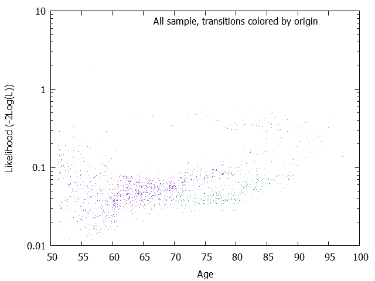
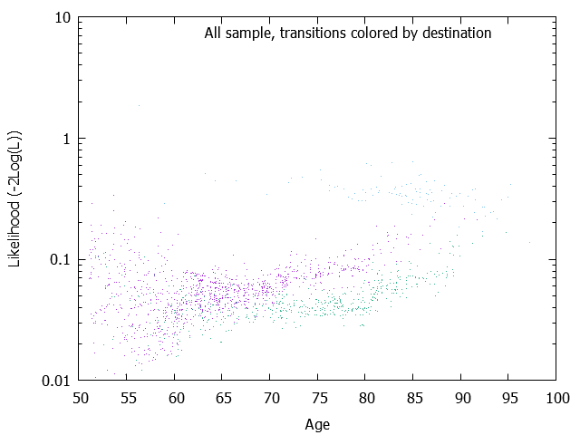
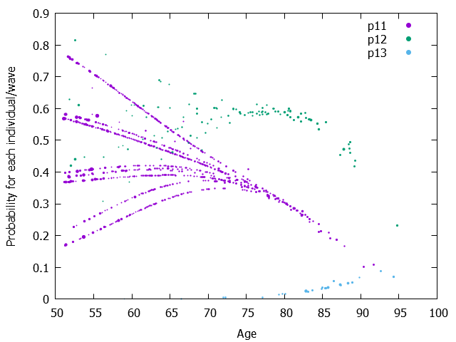
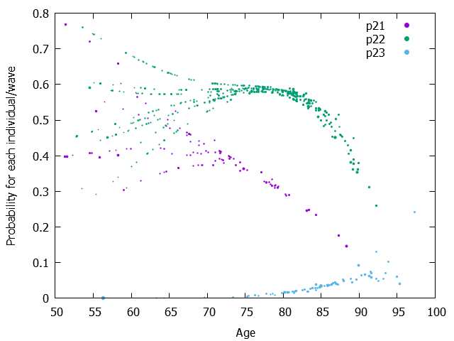

| Model= | 1 | + age |
|---|---|---|
| 12 | 50.3088411 | 1.8581830 |
| 13 | 36.2082647 | 1.9641187 |
| 21 | 6.9821451 | -0.0844526 |
| 23 | -13.5443446 | 0.1300523 |
The Wald test results are output only if the maximimzation of the Likelihood is performed (mle=1) Parameters, Wald tests and Wald-based confidence intervals W is simply the result of the division of the parameter by the square root of covariance of the parameter. And Wald-based confidence intervals plus and minus 1.96 * W It might be better to visualize the covariance matrix. See the page 'Matrix of variance-covariance of one-step probabilities and its graphs'.
| Model= | 1 | + age |
|---|---|---|
| 12 | 50.3088411 ( 98.1774043)W= 0.512[-142.1188714; 242.7365536] | 1.8581830 ( 171.2400332)W= 0.011[-333.7722820; 337.4886479] |
| 13 | 36.2082647 ( 98.1776452)W= 0.369[-156.2199199; 228.6364492] | 1.9641187 ( 171.2398992)W= 0.011[-333.6660837; 337.5943211] |
| 21 | 6.9821451 ( 0.6437471)W= 10.846[ 5.7204007; 8.2438895] | -0.0844526 ( 0.0095587)W= -8.835[ -0.1031877; -0.0657175] |
| 23 | -13.5443446 ( 1.7762185)W= -7.625[ -17.0257329; -10.0629563] | 0.1300523 ( 0.0204638)W= 6.355[ 0.0899433; 0.1701614] |